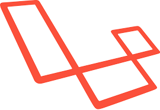

Veja nesse artigo uma introdução ao Framework Laravel para criar nossas aplicações em PHP.
Laravel é um Framework PHP utilizado para o desenvolvimento web, que utiliza a arquitetura MVC e tem como principal característica ajudar a desenvolver aplicações seguras e performáticas de forma rápida, com código limpo e simples, já que ele incentiva o uso de boas práticas de programação e utiliza o padrão PSR-2 como guia para estilo de escrita do código.
Para a criação de interface gráfica, o Laravel utiliza uma Engine de template chamada Blade, que traz uma gama de ferramentas que ajudam a criar interfaces bonitas e funcionais de forma rápida e evitar a duplicação de código.
Para se comunicar com um Banco de Dados o Laravel utiliza uma implementação simples do ActiveRecord chamada de Eloquent ORM, que é uma ferramenta que traz várias funcionalidades para facilitar a inserção, atualização, busca e exclusão de registros. Com configuração simples e pequena e com pouco código podemos configurar a conexão com Banco de Dados e trabalhar com ele.